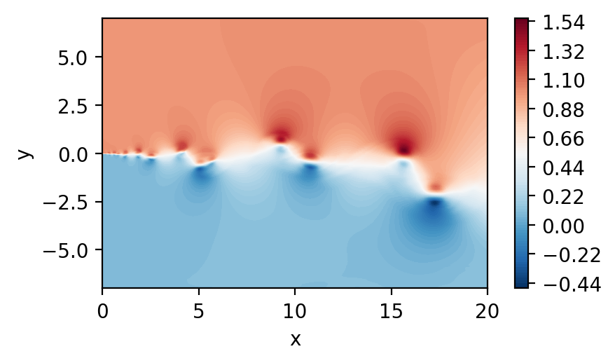
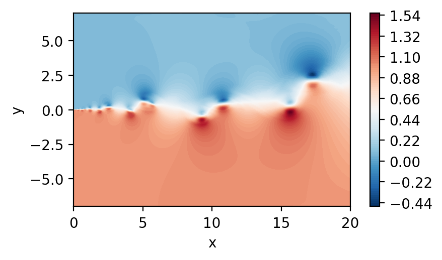

Mirroring fields
In certain situation it is beneficial to mirror fields. We show here one way of doing that
Import general modules
[1]:
# Import required modules
from mpi4py import MPI #equivalent to the use of MPI_init() in C
import matplotlib.pyplot as plt
import numpy as np
# Get mpi info
comm = MPI.COMM_WORLD
Import modules from pysemtools
[2]:
from pysemtools.io.ppymech.neksuite import pynekread
from pysemtools.datatypes.msh import Mesh
from pysemtools.datatypes.coef import Coef
from pysemtools.datatypes.field import FieldRegistry
Read the data and build objects
In this instance, we create connectivity for the mesh object, given that we wish to use direct stiffness summation to reduce discontinuities.
Transforming the domain
It is important to transform the domain in such a way that the axis/plane of symmetry is on the zero coordinate.
[3]:
msh = Mesh(comm, create_connectivity=True)
fld = FieldRegistry(comm)
pynekread('../data/mixlay0.f00001', comm, data_dtype=np.double, msh=msh, fld=fld)
coef = Coef(msh, comm, get_area=False)
# Move the mesh to be symmetric about the y-axis
max_y = np.max(msh.y)
min_y = np.min(msh.y)
msh.y = msh.y - (max_y - min_y)/2
2025-04-04 11:35:47,302 - Mesh - INFO - Initializing empty Mesh object.
2025-04-04 11:35:47,304 - Field - INFO - Initializing empty Field object
2025-04-04 11:35:47,305 - pynekread - INFO - Reading file: ../data/mixlay0.f00001
2025-04-04 11:35:47,311 - Mesh - INFO - Initializing Mesh object from x,y,z ndarrays.
2025-04-04 11:35:47,312 - Mesh - INFO - Initializing common attributes.
2025-04-04 11:35:47,312 - Mesh - INFO - Getting vertices
2025-04-04 11:35:47,314 - Mesh - INFO - Getting edge centers
2025-04-04 11:35:47,319 - Mesh - INFO - Facet centers not available for 2D
2025-04-04 11:35:47,320 - Mesh - INFO - Creating connectivity
2025-04-04 11:35:47,678 - Mesh - INFO - Mesh object initialized.
2025-04-04 11:35:47,679 - Mesh - INFO - Mesh data is of type: float64
2025-04-04 11:35:47,680 - Mesh - INFO - Elapsed time: 0.36899283600000005s
2025-04-04 11:35:47,680 - pynekread - INFO - Reading field data
2025-04-04 11:35:47,685 - pynekread - INFO - File read
2025-04-04 11:35:47,686 - pynekread - INFO - Elapsed time: 0.38121466699999995s
2025-04-04 11:35:47,687 - Coef - INFO - Initializing Coef object
2025-04-04 11:35:47,687 - Coef - INFO - Getting derivative matrices
2025-04-04 11:35:47,689 - Coef - INFO - Calculating the components of the jacobian
2025-04-04 11:35:47,704 - Coef - INFO - Calculating the jacobian determinant and inverse of the jacobian matrix
2025-04-04 11:35:47,707 - Coef - INFO - Calculating the mass matrix
2025-04-04 11:35:47,708 - Coef - INFO - Coef object initialized
2025-04-04 11:35:47,709 - Coef - INFO - Coef data is of type: float64
2025-04-04 11:35:47,710 - Coef - INFO - Elapsed time: 0.02325126799999999s
Plot the 2D velocity field
[4]:
fig, ax = plt.subplots(figsize=(5, 2.5), dpi = 200)
c = ax.tricontourf(msh.x.flatten(), msh.y.flatten() ,fld.registry["u"].flatten(), levels=100, cmap="RdBu_r")
fig.colorbar(c)
ax.set_aspect('equal')
ax.set_xlabel("x")
ax.set_ylabel("y")
plt.show()

Extrude the mesh to be one element deep
For this we can simply use a helper function
[5]:
# Import helper function
from pysemtools.datatypes.utils import extrude_2d_sem_mesh
# Extrude the 2D mesh to 3D
msh3d, fld3d = extrude_2d_sem_mesh(comm, lz = msh.lx, msh = msh, fld = fld)
2025-04-04 11:35:49,446 - Mesh - INFO - Initializing Mesh object from x,y,z ndarrays.
2025-04-04 11:35:49,448 - Mesh - INFO - Initializing common attributes.
2025-04-04 11:35:49,448 - Mesh - INFO - Getting vertices
2025-04-04 11:35:49,449 - Mesh - INFO - Getting edge centers
2025-04-04 11:35:49,480 - Mesh - INFO - Getting facet centers
2025-04-04 11:35:49,502 - Mesh - INFO - Creating connectivity
2025-04-04 11:35:50,847 - Mesh - INFO - Mesh object initialized.
2025-04-04 11:35:50,847 - Mesh - INFO - Mesh data is of type: float64
2025-04-04 11:35:50,848 - Mesh - INFO - Elapsed time: 1.402246764s
2025-04-04 11:35:50,849 - Field - INFO - Initializing empty Field object
Mirror the coordinate of interest
Simply multiply the axis to flip by -1
[6]:
# Mirrored mesh
import copy
y_mirror = msh.y.copy() * -1
# Create the interpolation points
xyz = [msh.x.flatten(), y_mirror.flatten(), msh.z.flatten()]
xyz = np.array(xyz).T
print(xyz.shape)
(102400, 3)
Interpolate
From here on, the process is the same
Find the points
The points are always found at the initialization stage. This might be time consiming
[7]:
# Interpolate the interpolation module
from pysemtools.interpolation.probes import Probes
probes = Probes(comm, probes = xyz, msh = msh3d, point_interpolator_type='multiple_point_legendre_numpy', max_pts=256, find_points_comm_pattern='point_to_point')
2025-04-04 11:35:50,909 - Probes - INFO - Initializing Probes object:
2025-04-04 11:35:50,910 - Probes - INFO - ======= Settings =======
2025-04-04 11:35:50,910 - Probes - INFO - output_fname: ./interpolated_fields.csv
2025-04-04 11:35:50,911 - Probes - INFO - write_coords: True
2025-04-04 11:35:50,912 - Probes - INFO - progress_bar: False
2025-04-04 11:35:50,913 - Probes - INFO - point_interpolator_type: multiple_point_legendre_numpy
2025-04-04 11:35:50,914 - Probes - INFO - max_pts: 256
2025-04-04 11:35:50,915 - Probes - INFO - find_points_iterative: [False, 5000]
2025-04-04 11:35:50,915 - Probes - INFO - find_points_comm_pattern: point_to_point
2025-04-04 11:35:50,916 - Probes - INFO - elem_percent_expansion: 0.01
2025-04-04 11:35:50,917 - Probes - INFO - global_tree_type: rank_bbox
2025-04-04 11:35:50,917 - Probes - INFO - global_tree_nbins: 1024
2025-04-04 11:35:50,918 - Probes - INFO - use_autograd: False
2025-04-04 11:35:50,918 - Probes - INFO - find_points_tol: 2.220446049250313e-15
2025-04-04 11:35:50,919 - Probes - INFO - find_points_max_iter: 50
2025-04-04 11:35:50,919 - Probes - INFO - ========================
2025-04-04 11:35:50,919 - Probes - INFO - Probes provided as keyword argument
2025-04-04 11:35:50,921 - Probes - INFO - Input probes are distributed: False
2025-04-04 11:35:50,922 - Probes - INFO - Mesh provided as keyword argument
2025-04-04 11:35:50,923 - Probes - INFO - Initializing interpolator
2025-04-04 11:35:50,923 - Interpolator - INFO - Initializing Interpolator object
2025-04-04 11:35:50,924 - Interpolator - INFO - Initializing point interpolator: multiple_point_legendre_numpy
2025-04-04 11:35:50,930 - Interpolator - INFO - Allocating buffers in point interpolator
2025-04-04 11:35:50,930 - Interpolator - INFO - Using device: cpu
2025-04-04 11:35:50,931 - Interpolator - INFO - Interpolator initialized
2025-04-04 11:35:50,932 - Interpolator - INFO - Elapsed time: 0.007844941999999744s
2025-04-04 11:35:50,932 - Probes - INFO - Setting up global tree
2025-04-04 11:35:50,933 - Interpolator - INFO - Using global_tree of type: rank_bbox
2025-04-04 11:35:50,933 - Interpolator - INFO - Finding bounding boxes for each rank
2025-04-04 11:35:50,937 - Interpolator - INFO - Creating global KD tree with rank centroids
2025-04-04 11:35:50,937 - Interpolator - INFO - Elapsed time: 0.0038503900000002034s
2025-04-04 11:35:50,938 - Probes - INFO - Scattering probes to all ranks
2025-04-04 11:35:50,938 - Interpolator - INFO - Scattering probes
2025-04-04 11:35:50,946 - Interpolator - INFO - done
2025-04-04 11:35:50,947 - Interpolator - INFO - Elapsed time: 0.008271931999999982s
2025-04-04 11:35:50,948 - Probes - INFO - Finding points
2025-04-04 11:35:50,950 - Interpolator - INFO - using communication pattern: point_to_point
2025-04-04 11:35:50,950 - Interpolator - INFO - Finding points - start
2025-04-04 11:35:50,951 - Interpolator - INFO - Finding bounding box of sem mesh
2025-04-04 11:35:51,006 - Interpolator - INFO - Creating KD tree with local bbox centroids
2025-04-04 11:35:51,007 - Interpolator - INFO - Obtaining candidate ranks and sources
2025-04-04 11:35:51,668 - Interpolator - INFO - Send data to candidates and recieve from sources
2025-04-04 11:35:51,671 - Interpolator - INFO - Find rst coordinates for the points
2025-04-04 11:36:21,913 - Interpolator - INFO - Send data to sources and recieve from candidates
2025-04-04 11:36:21,917 - Interpolator - INFO - Determine which points were found and find best candidate
2025-04-04 11:36:22,449 - Interpolator - INFO - Finding points - finished
2025-04-04 11:36:22,450 - Interpolator - INFO - Elapsed time: 31.499550671s
2025-04-04 11:36:22,451 - Probes - INFO - Gathering probes to rank 0 after search
2025-04-04 11:36:22,452 - Interpolator - INFO - Gathering probes
2025-04-04 11:36:22,457 - Interpolator - INFO - done
2025-04-04 11:36:22,458 - Interpolator - INFO - Elapsed time: 0.0057352719999954616s
2025-04-04 11:36:22,459 - Probes - INFO - Redistributing probes to found owners
2025-04-04 11:36:22,459 - Interpolator - INFO - Scattering probes
2025-04-04 11:36:22,469 - Interpolator - INFO - Assigning my data
2025-04-04 11:36:22,470 - Interpolator - INFO - done
2025-04-04 11:36:22,470 - Interpolator - INFO - Elapsed time: 0.010717165999999168s
2025-04-04 11:36:22,471 - Probes - INFO - Writing probe coordinates to ./interpolated_fields.csv
2025-04-04 11:36:23,085 - Probes - INFO - Writing points with warnings to ./warning_points_interpolated_fields.json
2025-04-04 11:36:23,087 - Probes - INFO - Found 102369 points, 0 not found, 31 with warnings
2025-04-04 11:36:23,087 - Probes - WARNING - There are points with warnings. Check the warning file to see them (error code -10)
2025-04-04 11:36:23,088 - Probes - WARNING - There are points with warnings. If test pattern is small, you can trust the interpolation
2025-04-04 11:36:23,089 - Probes - INFO - Probes object initialized
2025-04-04 11:36:23,089 - Probes - INFO - Elapsed time: 32.180081885999996s
Interpolate
After the points are found, any field can be interpolated
[8]:
# Interpolate from a field list
probes.interpolate_from_field_list(0, [fld3d.registry['u']], comm, write_data=False)
2025-04-04 11:36:23,097 - Probes - INFO - Interpolating fields from field list
2025-04-04 11:36:23,100 - Probes - INFO - Interpolating field 0
2025-04-04 11:36:23,100 - Interpolator - INFO - Interpolating field from rst coordinates
2025-04-04 11:36:23,729 - Interpolator - INFO - Elapsed time: 0.6277344499999984s
[13]:
import sys
if comm.Get_rank() == 0:
u_m = probes.interpolated_fields[:,1]
fig, ax = plt.subplots(figsize=(5, 2.5), dpi = 200)
c = ax.tricontourf(msh.x.flatten(), msh.y.flatten() ,u_m.flatten(), levels=100, cmap="RdBu_r")
fig.colorbar(c)
ax.set_aspect('equal')
ax.set_xlabel("x")
ax.set_ylabel("y")
plt.show()
